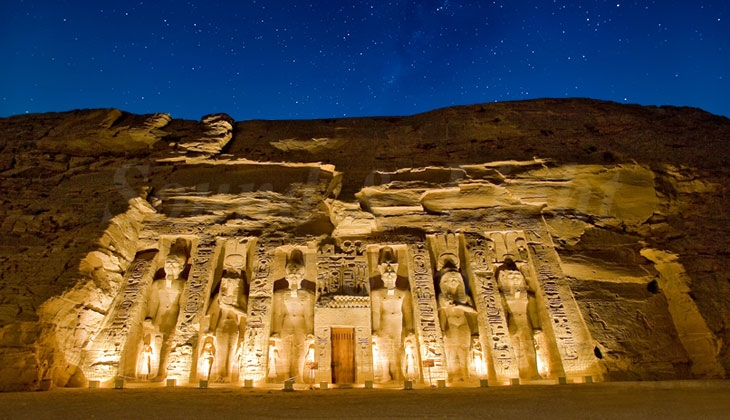

تعرف على الاثار المصرية




Some quick example text to build on the card title and make up the bulk of the card's content.

Some quick example text to build on the card title and make up the bulk of the card's content.
Some quick example text to build on the card title and make up the bulk of the card's content.
تُعتبر أهرامات الجيزة من أبرز المعالم السياحيّة والتاريخيّة في مصر، ومن أقدم الآثار التي ما زالت قائمةً حتى الآن. تتكوّن أهرامات الجيزة من ثلاثة أهرامات؛ وهي هرم خوفو، وهرم خفرع ، وهرم مُنقرع. هرم خوفو، وهو أكبر هرم، هو أحد عجائب الدّنيا السبع القديمة. دخل الهرم قائمة عجائب الدّنيا السّبعة لارتفاعه الشّاهق وتشييده العظيم؛ حيث يبلغ ارتفاع كلّ جانب من الهرم 231 متراً، ويبلُغ وزن كل طوبة في الهرم 2.5 طنّاً، بينما يبلُغ وزن الهرم كاملاً 6 ملايين طن. تقع الأهرامات في منطقة الجيزة المصريّة، أي في المنطقة الغربيّة من نهر النيل. وتُعتبر الأهرامات واحدةً من المقابر الملكيّة الهامَّة في مصر، والتي تضمّ جثث الملوك الفراعنة الذين تعاقبوا على حكم مصر. تمّ اكتشاف حتى الآن أكثر من 100 هرم تعود إلى الفراعنة القُدماء. بُنيت الأهرامات في الفترة بين 2055-1650 قبل الميلاد، واستمرّ بناء آخر هرم في الفترة بين 1550-1525 قبل الميلاد.